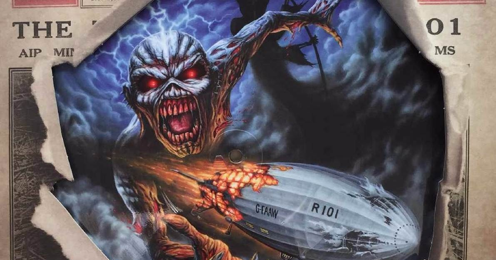

David Bowie - Heroes
Letra: I, I will be king
And you, you will be queen
Though nothing will drive them away
We can beat them, just for one day
We can be heroes, just for one day
And you, you can be mean
And I, I'll drink all the time
'Cause we're lovers, and that is a fact
Yes we're lovers, and that is that
Though nothing will keep us together
We could steal time just for one day
We can be heroes for ever and ever
What d'you say?
I, I wish you could swim
Like the dolphins, like dolphins can swim
Though nothing, nothing will keep us together
We can beat them, for ever and ever
Oh we can be Heroes, just for one day
I, I will be king
And you, you will be queen
Though nothing will drive them away
We can be Heroes, just for one day
We can be us, just for one day
I, I can remember (I remember)
Standing, by the wall (by the wall)
And the guns, shot above our heads (over our heads)
And we kissed, as though nothing could fall (nothing could fall)
And the shame, was on the other side
Oh we can beat them, for ever and ever
Then we could be Heroes, just for one day
We can be Heroes
We can be Heroes
We can be Heroes
Just for one day
We can be Heroes
We're nothing, and nothing will help us
Maybe we're lying, then you better not stay
But we could be safer, just for one day
Oh-oh-oh-ohh, oh-oh-oh-ohh, just for one day
Led Zeppelin - Since I've Been Loving You
Letra: Workin' from seven to eleven every night
Really makes life a drag
I don't think that's right
I've really been the best, the best of fools
I did what I could, yeah
'Cause I love you, baby
How I love you, darling
How I love you, baby
My beloved little girl, little girl
But baby, since I've been loving you, yeah
I'm about to lose my, my worried mind, oh yeah
Everybody trying to tell me
That you didn't mean me no good
I've been trying, Lord, let me tell you
Let me tell you, I really did the best I could
I've been, I've been working from seven to eleven every night
I said, it kinda makes my life a drag, drag, drag, drag
Lord, yeah, that ain't right, now, now
Since I've been loving you
I'm about to lose my worried mind, yeah
Watch out
Said I've been crying, yeah
Oh, my tears they fell like rain
Don't you hear them, don't you hear them falling?
Don't you hear them, don't you hear them falling?
Do you remember, mama, when I knocked upon your door?
I said you had the nerve to tell me
You didn't want me no more, yeah
I open my front door, hear my back door slam
You know, I must have one of them new fangled
New fangled back door man
Yeah, yeah, yeah, yeah, yeah
I've been working from seven, seven, seven to eleven every night
It kinda makes my life a drag, a drag, drag
Ah, yeah, it makes a drag
Baby, since I've been loving you
I'm about to lose
I'm about to lose, lose my worried mind
Just one more, just one more, oh yeah
Since I've been loving you, I'm gonna lose my worried mind
Iron Maiden - Empire of the Clouds
To ride the storm, to an empire of the clouds
To ride the storm, they climbed aboard their silver ghost
To ride the storm, to a kingdom that will come
To ride the storm, and damn the rest, oblivion
Royalty and dignitaries, brandy and cigars
Related giant of the skies, you hold them in your arms
The millionth chance they laughed, to take down his majesty's craft
To India they say, magic carpet float away, an October fateful day
Mist is in the trees, stone sweats with the dew
The morning sunrise, red before the blue
Hanging at the mast, waiting for command
His majesty's airship, the r101
She's the biggest vessel built by man, a giant of the skies
For all you unbelievers, the Titanic fits inside
Drum rolled tight, a canvas skin, silvered in the sun
Never tested with the fury, with a beating yet to come
The fury yet to come
In the gathering gloom, a storm rising in the west
The coxswain stared into the
We must go now, we must take our chance with fate
We must go now, for the politicians he can't be late
The airship crew awake for thirty hours at full stretch,
But the ship is in their backbone, every sinew, every inch
She never flew at full speed, a trial never done
A fragile outer cover, her Achilles would become
An Achilles yet to come
Sailors of the sky, a hardened breed
Loyal to the king, and an airship creed
The engines drum, the telegraph sounds
Release the cords that bind us to the ground
Said the coxswain, sir, she's heavy, she'll never make this flight
Said the captain, damn the cargo, we'll be on our way tonight
Groundsmen cheered in wonder, as she backed up from the mast
Baptizing with her water, from the ballast fore and aft
Now she slips into our past
Feeling the wind as it blows you
Feeling the beams as they pass you along
Watching the channel below you
Lower and lower, into the night
Lights are passing below you
Northern France, asleep in their beds
Storm is raging around you
A million to one, that's what he said
Reaper standing beside you
Wind inside cuts to the bone
Panicked to make a decision
Experienced men, asleep in their graves
The cover is ripped and she's flooding
Rain is flooding into the hold
Bleeding to death and she's falling
Lifting gas is draining away
We're down lads, came a cry, bow plunging from the sky
Three thousand horses silent as the ship began to die
The flares to guide her path ignited at the last
The empire of the clouds, just ashes in our past
Just ashes at the last
Here lie their dreams as they stand in the sun
On the ground where they built, and the engines they run
To the moon and the stars, now what have we done?
Oh the dreamers may die, but the dreams live on
Dreams live on
Dreams live on
Ooh
Now a shadow on a hill, the angel of the east
The empire of the clouds may rest in peace
And in a country churchyard, laid head to the mast
Eight and Forty souls who came to die in France